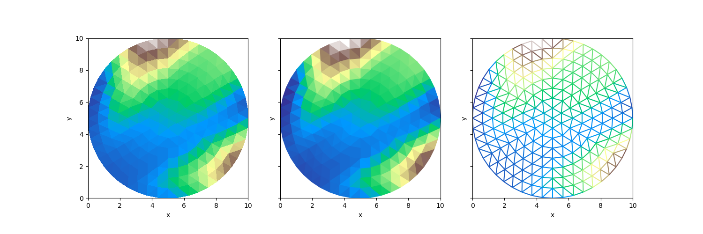

Note
Go to the end to download the full example code.
Disk#
This is a small synthetic unstructured XugridDataset with topology in the shape of a disk. It contains data on the nodes, faces, and edges.
<matplotlib.collections.LineCollection object at 0x7f791fef71d0>
import matplotlib.pyplot as plt
import xugrid
uds = xugrid.data.disk()
fig, axes = plt.subplots(nrows=1, ncols=3, sharex=True, sharey=True, figsize=(15, 5))
axes = axes.ravel()
for ax in axes:
ax.set_aspect(1)
uds["node_z"].ugrid.plot(ax=axes[0], add_colorbar=False, cmap="terrain")
uds["face_z"].ugrid.plot(ax=axes[1], add_colorbar=False, cmap="terrain")
uds["edge_z"].ugrid.plot(ax=axes[2], add_colorbar=False, cmap="terrain")
Total running time of the script: (0 minutes 0.121 seconds)